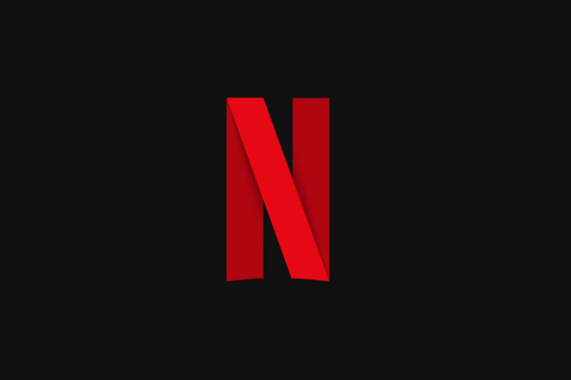

Un film de gen este un film care se încadrează într-o categorie specifică, definită de intrigă, teme, ton și stil. Fiecare gen cinematografic are caracteristici distincte, oferind experiențe unice spectatorilor.
Există genuri de filme binecunoscute, precum acțiunea, comedia sau drama, dar și clasificări mai complexe care duc la diversificarea acestora. În această publicație, vom explora cele mai populare genuri de filme și ce le face speciale. Un exemplu de platformă unde poți descoperi o varietate de genuri cinematografice este https://www.netflix.com/ro-en/login?nextpage=https%3A%2F%2Fwww.netflix.com%2Fbrowse.
Imaginea are atributul height de valoare 250.
Următorul tabel ilustrează principalele genuri cinematografice, împreună cu exemple de filme ce se potrivesc fiecărui gen, pentru a ajuta la alegerea unui film pe gustul tău.
| Acțiune | Gladiator |
| Dramă | Anora |
| Comedie | Masca |
| Horror | Nosferatu |
| Romantic | Jurnalul |
Observatie:Aceste genuri sunt doar o mică parte din diversitatea cinematografică,
iar multe filme pot combina mai multe genuri pentru a crea experiențe cinematografice unice.
Nu uita să te abonezi la newsletterul nostru pentru a fi la curent cu ultimele lansări, recenzii și articole interesante despre lumea filmului.
Pentru a descoperi și mai multe filme din diverse genuri, îți recomandăm să vizitezi
A Guide to the Basic Film Genres
de la adresa https://www.premiumbeat.com/blog/guide-to-basic-film-genres/.
Abonare newsletter:
Platforme de streaming pentru filme:
Pentru a întelege mai bine fiecare platformă de streaming și avantajele sale, îți recomandăm să accesezi articolul complet. Următorul document de la adresa https://www.tomsguide.com/us/best-streaming-video-services,review-2625.html îți va oferi comparații utile între platformele de streaming.